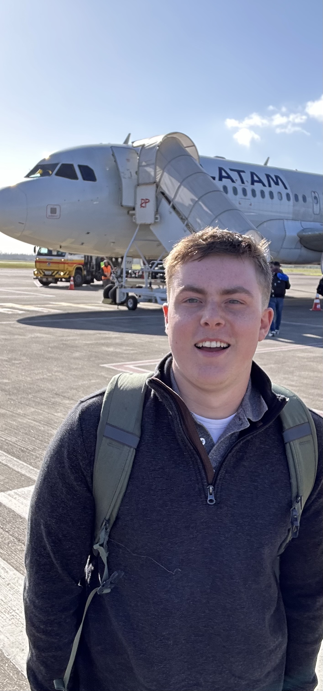
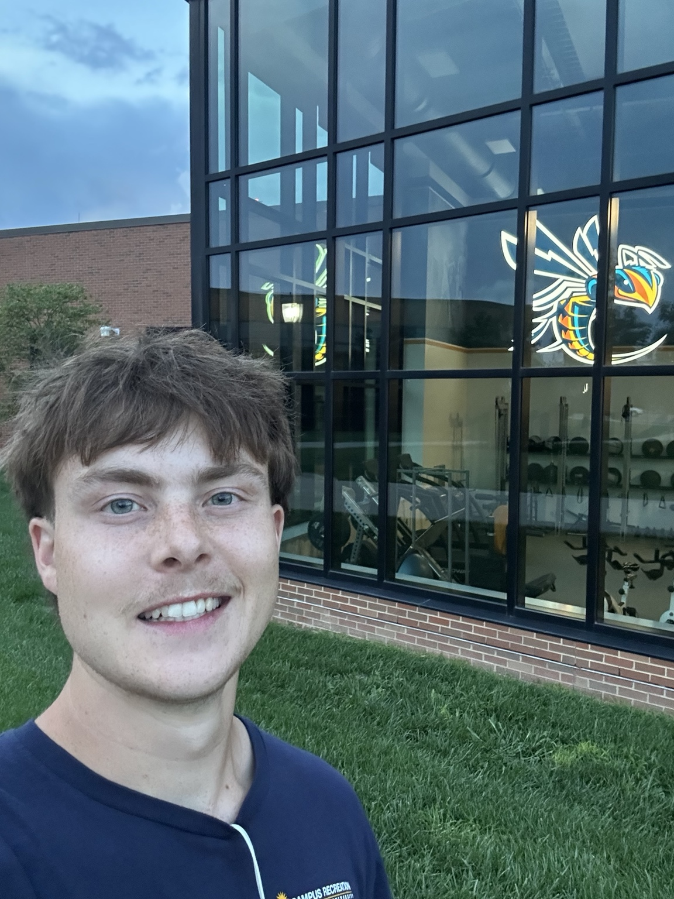

About Me
I am pursuing a Bachelor of Science in Accounting and plan to work
toward CPA licensure. I am interested in financial analysis, accurate
business operations, and using strong organizational skills to support
effective decision-making.
I spent much of my childhood living in Brazil, where my parents worked
with a nonprofit organization. Living in a cross-cultural environment
broadened my perspective, strengthened my adaptability, and taught me
the value of clear communication across different backgrounds. During
that time, I served as an English-Portuguese translator, developing
professionalism, discretion, and confidence in high-pressure situations.
“Far and away the best prize that life offers is the chance to work hard
at work worth doing.”
— Theodore Roosevelt

Global Perspective
My experience living in Brazil and translating between English and
Portuguese has shaped how I approach communication, teamwork, and
problem-solving. It has taught me to listen carefully, adapt quickly,
and work thoughtfully with people from different backgrounds.
I bring that global perspective to my academic work and professional
experience in logistics, inventory management, customer service, and
team leadership.
Education
Cedarville University
B.S. Accounting | Expected December 2027
Minor in Biology, with additional academic study in Business
Administration and Bible.
Relevant Coursework
Principles of Accounting I & II, Microeconomics, Statistics for Business,
Software Tools for Business, Creative Problem Solving, Business
Experience, and Business Law.
Experience
Delivery Specialist — Jump Around Rentals
May 2025 – August 2026 | Fredericksburg, VA
- Delivered and installed event equipment for parties and events of up to 3,000 guests.
- Operated box trucks and trailers safely while managing time-sensitive deliveries.
- Worked directly with clients to create reliable, positive event experiences.
Shipping and Receiving Supervisor — K.E. Warehouses
May 2024 – January 2025 | Cincinnati, OH
- Supervised the accurate handling of more than 1,000 items daily.
- Managed inventory records and warehouse organization.
- Trained employees in safety procedures and efficient operations.
Electronics Sales Associate — Walmart
May 2023 – August 2024 | Cincinnati, OH
- Assisted more than 50 customers daily in selecting electronics and related products.
- Maintained organized, accurate merchandise displays and product availability.
Translator — Converge
February 2016 – April 2023 | São Paulo, Brazil
- Provided accurate oral and written translation between English and Portuguese.
- Supported individuals and organizations through clear cross-cultural communication.
- Maintained confidentiality and professionalism while handling sensitive information.
Skills
Microsoft Excel
Data Organization
Inventory & Record Accuracy
Operational Analysis
Process Improvement
Professional Communication
Customer Service
Portuguese — Professional Proficiency
Honors & Recognition
- Dean's Honors List, Cedarville University
- Kuriger Accounting Scholarship
- President's Scholar Award
- Dr. Deforia Lane Kingdom Diversity Scholarship
- President's Ministry Impact Scholarship
Leadership & Involvement
Accounting Society — Cedarville University
General Member | August 2025 – Present
Participate in a student organization focused on professional development
and career exploration in accounting and business.
Community & Ministry Service
Served with the Southern Cone Initiative and The Timothy Initiative,
supporting cross-cultural community work, leadership development, and
service projects.
Work & Academics
Alongside my Accounting coursework at Cedarville University, I work
approximately 15–20 hours per week in part-time campus roles. Balancing
employment with a full academic schedule has strengthened my time
management, dependability, organization, and ability to prioritize
responsibilities effectively.

Fitness Floor Staff — Cedarville University
February 2026 – Present | Part-time
- Provide customer service by greeting members, assisting with check-ins, and answering questions about fitness facilities and services.
- Maintain a clean, safe, and organized workout environment by sanitizing equipment and supporting safety standards.
- Support daily gym operations by assisting members with equipment use, handling front-desk responsibilities, and resolving concerns professionally.
Sanitation & Kitchen Support Associate — Cedarville University
August 2023 – Present | Part-time
- Maintain a clean, organized, and sanitary kitchen environment in accordance with health and safety standards.
- Support reliable dining operations through consistent attention to detail, cleanliness, and teamwork.
These roles have reinforced the importance of professionalism, service,
safety, and following through on commitments—skills I carry into both my
academic work and future accounting career.